<meta charset="utf-8">
<meta name="viewport" content="width=device-width, initial-scale=1">
<title>{{title}}</title>
<link rel="preconnect" href="https://fonts.googleapis.com">
<link rel="stylesheet" href="https://fonts.googleapis.com/css2?family=Lato:wght@400;700;900&family=IBM+Plex+Mono:wght@400;500&display=swap">
<style>
:root{
  --bg:#23262d; --paper:#e9e7e1; --surface:#ffffff; --surface-2:#f1efea; --line:#d5d3cc; --line-soft:#e0ded8;
  --ink:#2f3136; --ink-soft:#55585f; --ink-mute:#80838a;
  --link:#1f5fa8; --link-hover:#154480; --accent:#1f5fa8;
  --amber:#c25a00; --cyan:#1f5fa8; --coral:#d04a3a; --green:#2a8a4a; --violet:#4a5bd6; --hl:#fff0c2;
  --chip:#2f3136; --chip-ink:#ffffff;
  --c64blue:#40318d; --c64grey:#686868;
  --fd:'Lato',system-ui,sans-serif; --fb:'Lato',system-ui,sans-serif; --fm:'IBM Plex Mono',ui-monospace,Menlo,monospace;
  --col:1080px; --gx:68px; --fs:17px; --lh:1.6; --hw:900; --h1:46px; --h2:26px; --sy:48px; --pp:26px; --r:10px;
  --plate-shadow:0 1px 2px rgba(0,0,0,.05),0 4px 14px rgba(0,0,0,.05);
}
*{box-sizing:border-box}
html{background:var(--bg);min-height:100%}
body{background:var(--paper);color:var(--ink);font-family:var(--fb);font-size:var(--fs);line-height:var(--lh);max-width:var(--col);margin:0 auto;min-height:100vh;padding:0 0 4rem}
h1,h2,h3{font-weight:var(--hw);letter-spacing:-.01em;text-wrap:balance;color:var(--ink);margin:0}
.wrap{padding:0 var(--gx)}
.hero{padding:48px var(--gx) 8px;text-align:left}
.eyebrow{font-family:var(--fm);font-size:12px;letter-spacing:.08em;text-transform:uppercase;color:var(--ink-mute);margin:0 0 10px}
.hero h1{font-size:var(--h1);line-height:1.15;letter-spacing:-.02em;margin:0 0 14px}
.hero .sub{margin:0 0 .6em;color:var(--ink-soft)}
section{padding:var(--sy) 0 24px}
section:last-of-type{border-bottom:none}
.fig{font-family:var(--fm);font-size:12px;letter-spacing:.08em;text-transform:uppercase;color:var(--ink-mute);margin:0 0 10px}
h2.t{font-size:var(--h2);margin-bottom:12px}
.lede{color:var(--ink-soft);margin:0 0 30px}
.plate{background:var(--surface);border:1px solid var(--line);border-radius:var(--r);padding:var(--pp);box-shadow:var(--plate-shadow)}
.cap{font-size:14px;color:var(--ink-mute);margin-top:14px;line-height:1.55}
.cap b{color:var(--ink);font-weight:700}
code{font-family:var(--fm);font-size:.82em;background:var(--chip);color:var(--chip-ink);border-radius:4px;padding:2px 6px;overflow-wrap:break-word;-webkit-box-decoration-break:clone;box-decoration-break:clone}

table.t{border-collapse:collapse;margin:0 0 20px;font-size:15px}table.t td,table.t th{border-bottom:1px solid var(--line);padding:6px 12px 6px 0;text-align:left;vertical-align:top}
</style>
<!--
  Template for a game article. Keep it self-contained: inline CSS and JS,
  fonts are the only external resource, opens from disk. The section below
  shows the parts a section is made of, not which section comes first: the
  kinds of section are listed in kit/skills/core/70-minisite, in no order,
  and this page's order is its own. The best thing to press or hear goes
  as high as the explanation lets it, and every section should have
  something the reader can press. Copy follows kit/style.md and is written
  last.
-->
<!-- tabs -->
<header class="hero">
  <p class="eyebrow">1992 · Ocean Software</p>
  <h1>Lethal Weapon: the stages</h1>
  <p class="sub">Every stage on the disk, drawn whole from its own files.</p>
</header>
<main class="wrap">
<section>
  <p class="lede">Each picture is a stage's map of 288 by 70 characters, built as the game builds it (<code>$0673</code>) from the stage's packed files, unpacked by the game's own decoder (<code>$F5D5</code>) run on the site's 6502 ahead of time. For stage 1A the map built this way matches the one in the machine's memory in play, byte for byte. Sprites are not drawn: enemies and pickups come from the stage's records and appear as you reach them. Scroll each picture sideways.</p>
  <p>The stage table (<code>$1ACD</code>) also names a stage L4AX. The disk holds no file of that name and no door leads to it: stage L4A's doors go straight to L4B.</p>
</section>
<section id="l1a">
  <p class="fig">Stage L1A</p>
  <div class="plate" style="overflow-x:auto">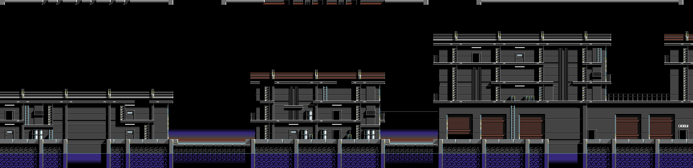<p class="cap"><b>L1A</b>, from the files L1A's .MAP (rows 29-63 of its tile map), .BLK, .CHR and .ATT. Its doors lead to: L1AX, L1B.</p></div>
</section>
<section id="l1ax">
  <p class="fig">Stage L1AX</p>
  <div class="plate" style="overflow-x:auto">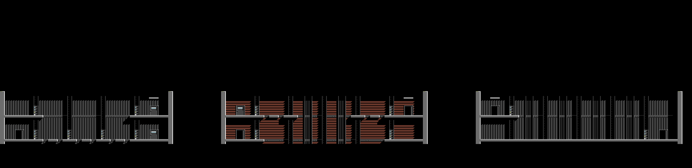<p class="cap"><b>L1AX</b>, from the files L1A's .MAP (rows 0-34 of its tile map), .BLK, .CHR and .ATT. Its doors lead to: L1A.</p></div>
</section>
<section id="l1b">
  <p class="fig">Stage L1B</p>
  <div class="plate" style="overflow-x:auto">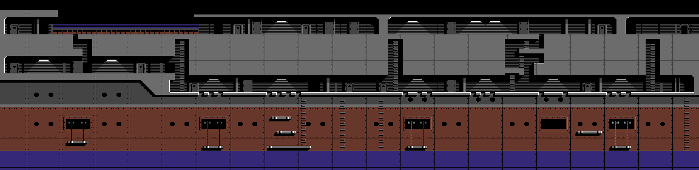<p class="cap"><b>L1B</b>, from the files L1B's .MAP (rows 29-63 of its tile map), .BLK, .CHR and .ATT. Its doors lead to: L1AX, L1B, L2A.</p></div>
</section>
<section id="l2a">
  <p class="fig">Stage L2A</p>
  <div class="plate" style="overflow-x:auto">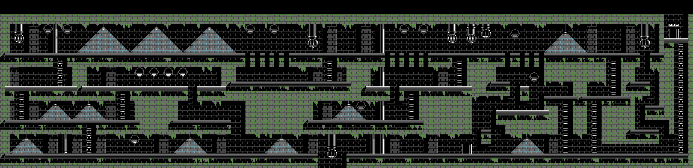<p class="cap"><b>L2A</b>, from the files L2A's .MAP (rows 29-63 of its tile map), .BLK, .CHR and .ATT. Its doors lead to: L1AX, L2AX, L2B.</p></div>
</section>
<section id="l2ax">
  <p class="fig">Stage L2AX</p>
  <div class="plate" style="overflow-x:auto">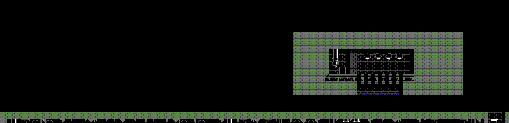<p class="cap"><b>L2AX</b>, from the files L2A's .MAP (rows 0-34 of its tile map), .BLK, .CHR and .ATT. Its doors lead to: L1AX, L2A.</p></div>
</section>
<section id="l2b">
  <p class="fig">Stage L2B</p>
  <div class="plate" style="overflow-x:auto">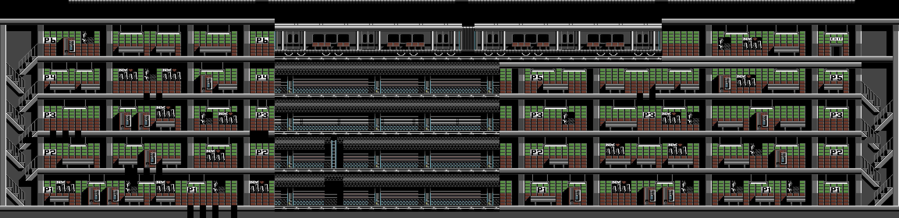<p class="cap"><b>L2B</b>, from the files L2B's .MAP (rows 29-63 of its tile map), .BLK, .CHR and .ATT. Its doors lead to: L1AX, L2B, L3A.</p></div>
</section>
<section id="l3a">
  <p class="fig">Stage L3A</p>
  <div class="plate" style="overflow-x:auto">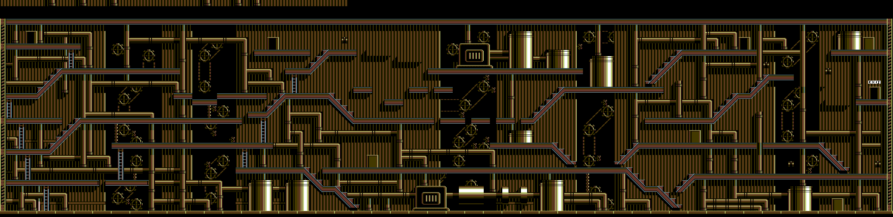<p class="cap"><b>L3A</b>, from the files L3A's .MAP (rows 29-63 of its tile map), .BLK, .CHR and .ATT. Its doors lead to: L3AX, L3B.</p></div>
</section>
<section id="l3ax">
  <p class="fig">Stage L3AX</p>
  <div class="plate" style="overflow-x:auto">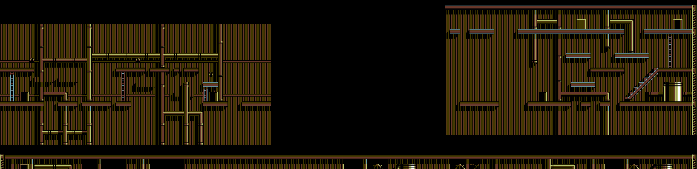<p class="cap"><b>L3AX</b>, from the files L3A's .MAP (rows 0-34 of its tile map), .BLK, .CHR and .ATT. Its doors lead to: L3A.</p></div>
</section>
<section id="l3b">
  <p class="fig">Stage L3B</p>
  <div class="plate" style="overflow-x:auto">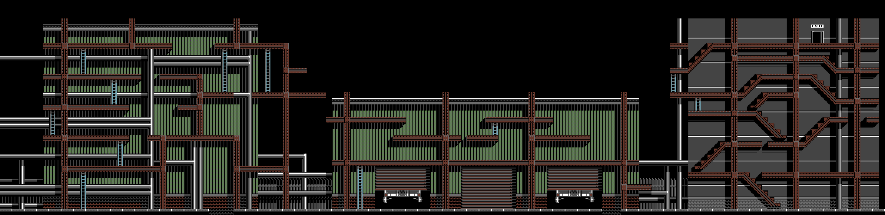<p class="cap"><b>L3B</b>, from the files L3B's .MAP (rows 29-63 of its tile map), .BLK, .CHR and .ATT. Its doors lead to: L1AX, L4A.</p></div>
</section>
<section id="l4a">
  <p class="fig">Stage L4A</p>
  <div class="plate" style="overflow-x:auto">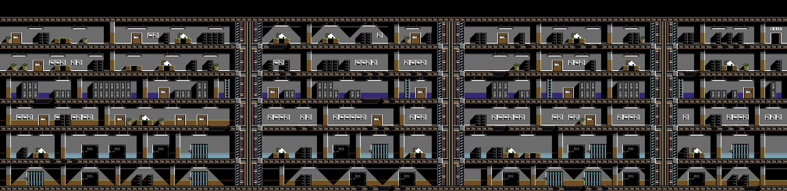<p class="cap"><b>L4A</b>, from the files L4A's .MAP (rows 29-63 of its tile map), .BLK, .CHR and .ATT. Its doors lead to: L1AX, L4B.</p></div>
</section>
<section id="l4b">
  <p class="fig">Stage L4B</p>
  <div class="plate" style="overflow-x:auto">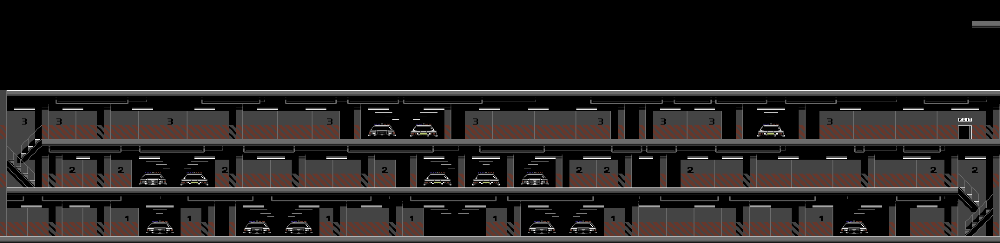<p class="cap"><b>L4B</b>, from the files L4B's .MAP (rows 29-63 of its tile map), .BLK, .CHR and .ATT. Its doors lead to: L1AX, L5A.</p></div>
</section>
<section id="l5a">
  <p class="fig">Stage L5A</p>
  <div class="plate" style="overflow-x:auto">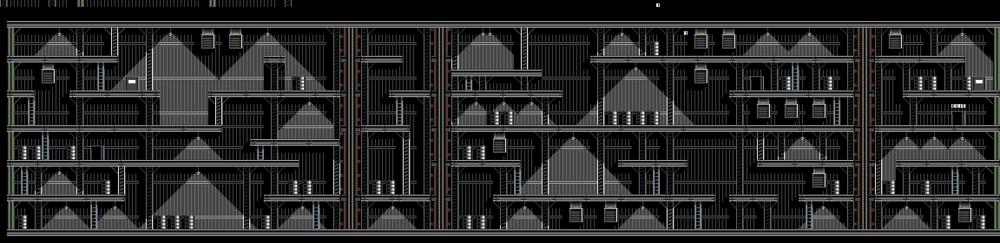<p class="cap"><b>L5A</b>, from the files L5A's .MAP (rows 29-63 of its tile map), .BLK, .CHR and .ATT. Its doors lead to: L5AX, L5B.</p></div>
</section>
<section id="l5ax">
  <p class="fig">Stage L5AX</p>
  <div class="plate" style="overflow-x:auto">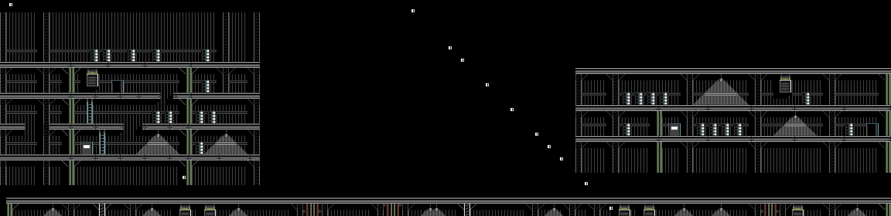<p class="cap"><b>L5AX</b>, from the files L5A's .MAP (rows 0-34 of its tile map), .BLK, .CHR and .ATT. Its doors lead to: L5A.</p></div>
</section>
<section id="l5b">
  <p class="fig">Stage L5B</p>
  <div class="plate" style="overflow-x:auto">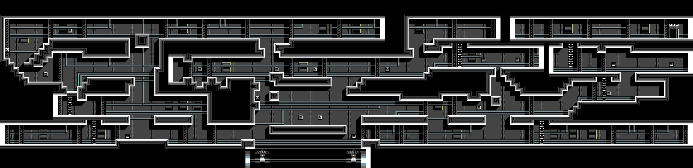<p class="cap"><b>L5B</b>, from the files L5B's .MAP (rows 29-63 of its tile map), .BLK, .CHR and .ATT. Its doors lead to: L1AX, the ending.</p></div>
</section>
</main>
<footer style="margin:16px 0 0;padding:22px var(--gx) 0;border-top:1px solid #e0ded8;font-family:'IBM Plex Mono',ui-monospace,Menlo,monospace;font-size:12px;color:#80838a"><a href="https://github.com/gamesexplained/gamesexplained" style="color:#1f5fa8;text-decoration:none">GitHub</a> · <a href="https://discord.gg/3V9GWyRDWV" style="color:#1f5fa8;text-decoration:none">Discord</a><br>© Games Explained contributors. Write-ups, facts and symbol maps are available under <a href="https://creativecommons.org/licenses/by-sa/4.0/" style="color:#1f5fa8;text-decoration:none">CC BY-SA 4.0</a>; code under <a href="https://opensource.org/licenses/MIT" style="color:#1f5fa8;text-decoration:none">MIT</a></footer>
